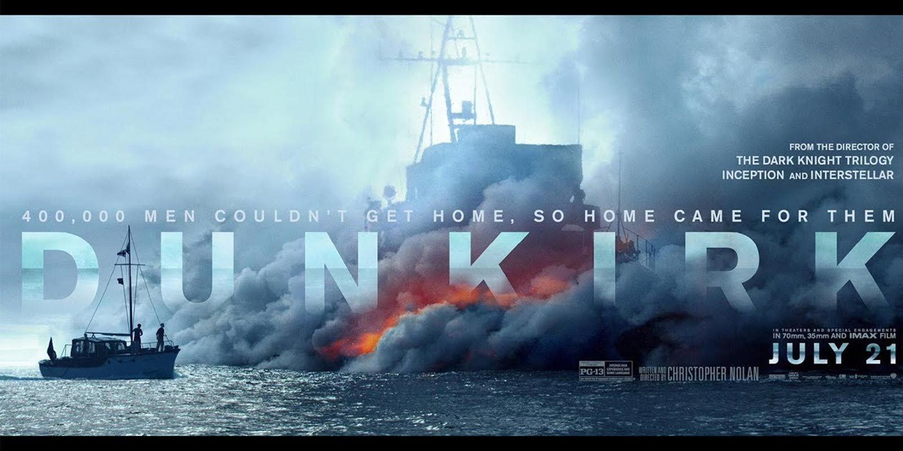
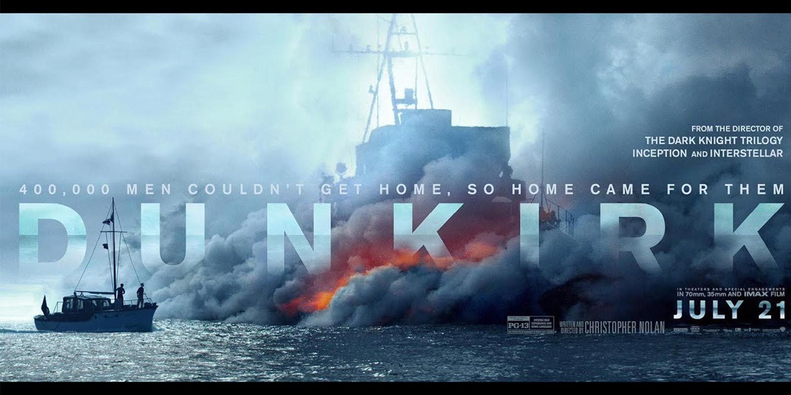

 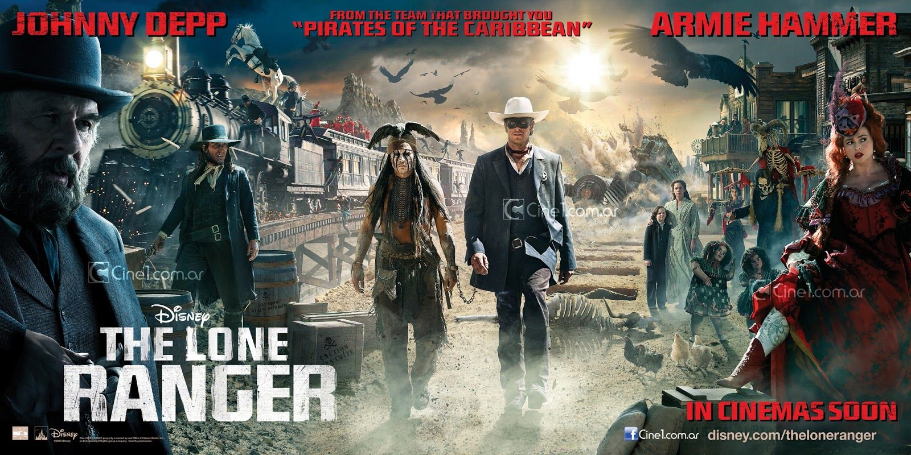
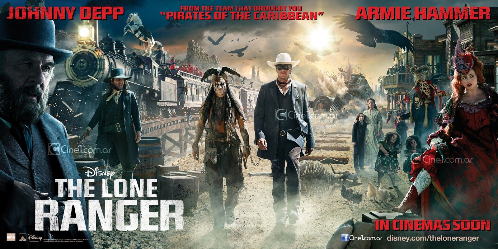


 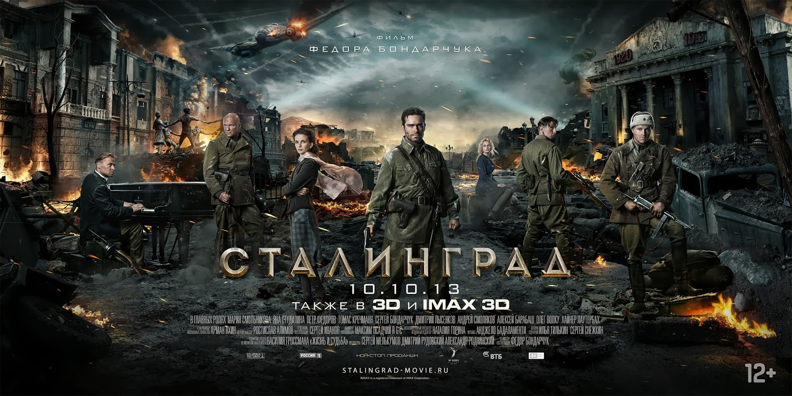
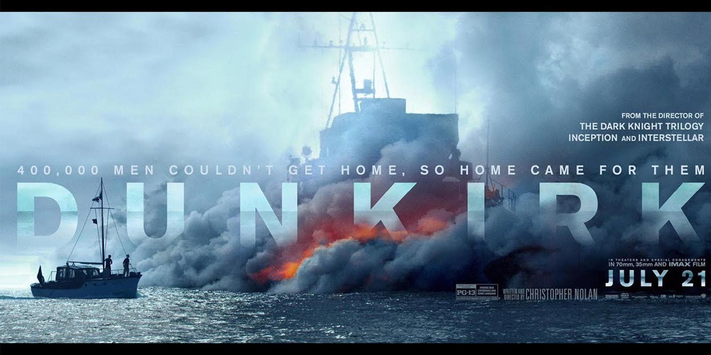
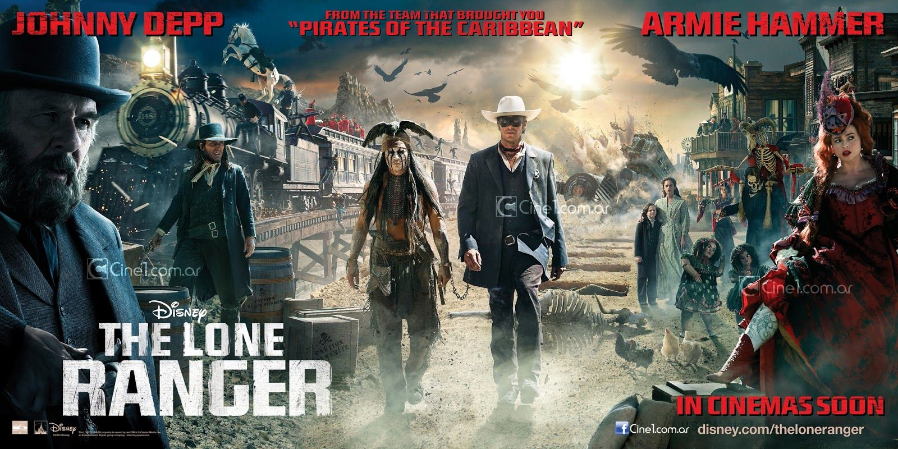
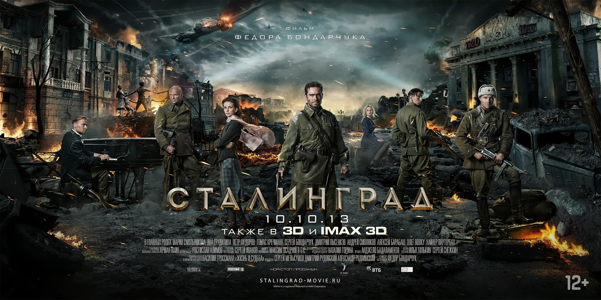
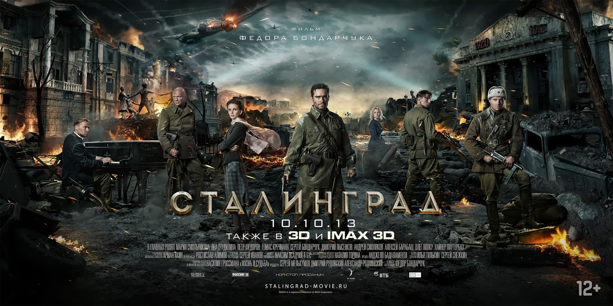
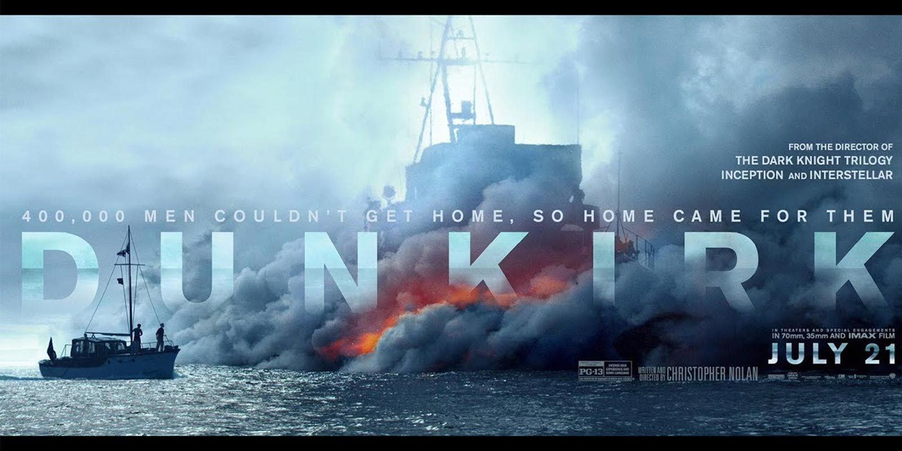
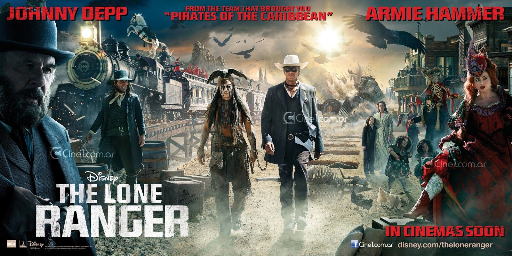
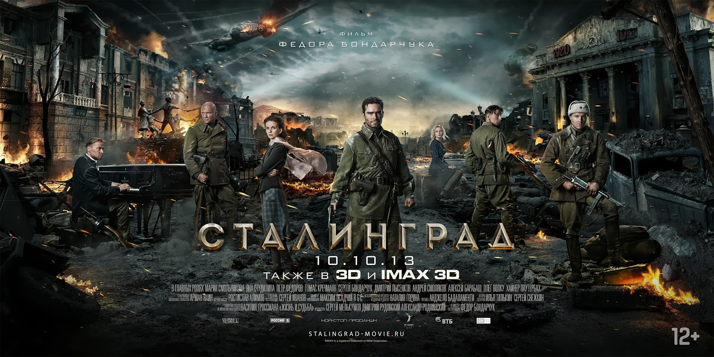
1954 год. Лос-Анджелес. Молодой, умный и целеустремленный темнокожий предприниматель Бернард Гарет предлагает своему бизнес-партнеру Джо Моррису заняться недвижимостью, а именно — купить один из городских банков, что позволит темнокожим собратьям обращаться в банк по многим вопросам, что категорически запрещено цветному населению. Но темнокожий банкир во времена расовой дискриминации, когда цветной может войти в здание банка только будучи прислугой, это что-то из ряда вон выходящее. Поэтому для осуществления своего плана партнерам нужен подставной белый парень, который будет выполнять роль главы компании по недвижимости, в то время как Бернард и Джо будут выполнять роль прислуги. Таким подставным лицом становится простой рабочий Мэтт Штайнер. Правда работяге предстоит многому научиться, чтобы естественно вести себя в обществе богатых белых воротничков.

Детектив полиции Грэг Харпер берется за расследование загадочного исчезновения 10-летнего мальчишки Джастина, который катался на велосипеде в парке. Нашли лишь его велосипед и никаких следов мальчика. В семье детектива Харпера не все в порядке, что сказывается на его работе. Словно в тихом омуте семья переживает кризис. Жена Грэга, Джекки, изменила ему и теперь между супругами напряженные отношения. Сын-подросток Коннор обижен на мать, а Грэг все чаще спит в другой комнате. Расследование особо не продвигается, зато в доме Харперов творится нечто странное и пугающее жильцов…
Малефисента — юная волшебница, проживающая в зачарованном лесу, среди сказочных существ. Она всегда вела уединенный образ жизни, поддерживая порядок и мир в своем волшебном королевстве, но после того, как в ее мир вторглись люди все изменилось. Человечество принесло в ее страну разрушение и хаос, и юная волшебница была вынуждена встать на защиту своих подданных и прибегнуть к черной магии, наложив проклятие на маленькую дочь короля...
Джон Уик — наемный убийца, о котором ходят легенды. Он всегда доводит свое дело до конца, и в его послужном списке нет провалов. Однако он решил покончить с прошлым и начать новую жизнь, в котором нет места оружию и убийствам. Но выход на пенсию приходится отложить, поскольку его бывший коллега решил взять контроль над таинственной гильдией убийц...
Однажды Джейн обнаруживает на Земле странные аномалии, которые, в виде скопления некой энергии, поднимают в воздух огромные грузовики, словно они всего лишь мелкие пушинки. После этого жизни девушки начинает угрожать опасность, о чем узнает Тор, вернувшийся домой, чтобы продолжать поддерживать порядок во всех девяти мирах. Он решает вернуться на Землю и забрать Джейн в свой мир...